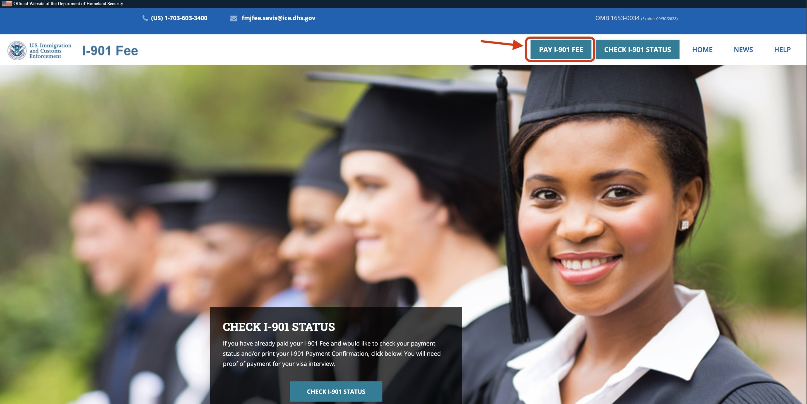
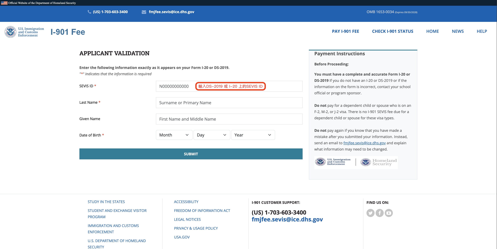
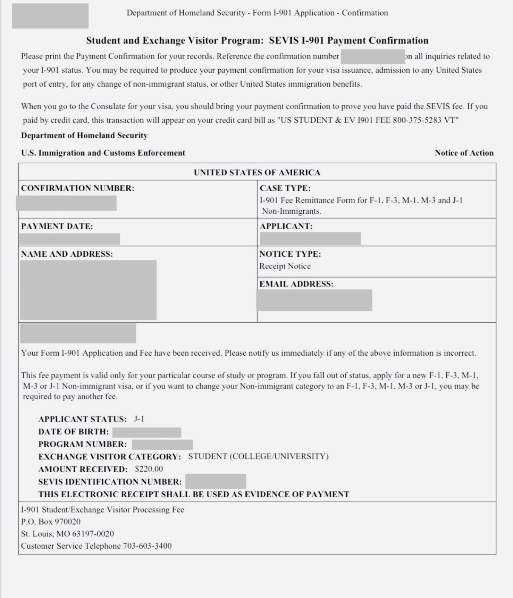
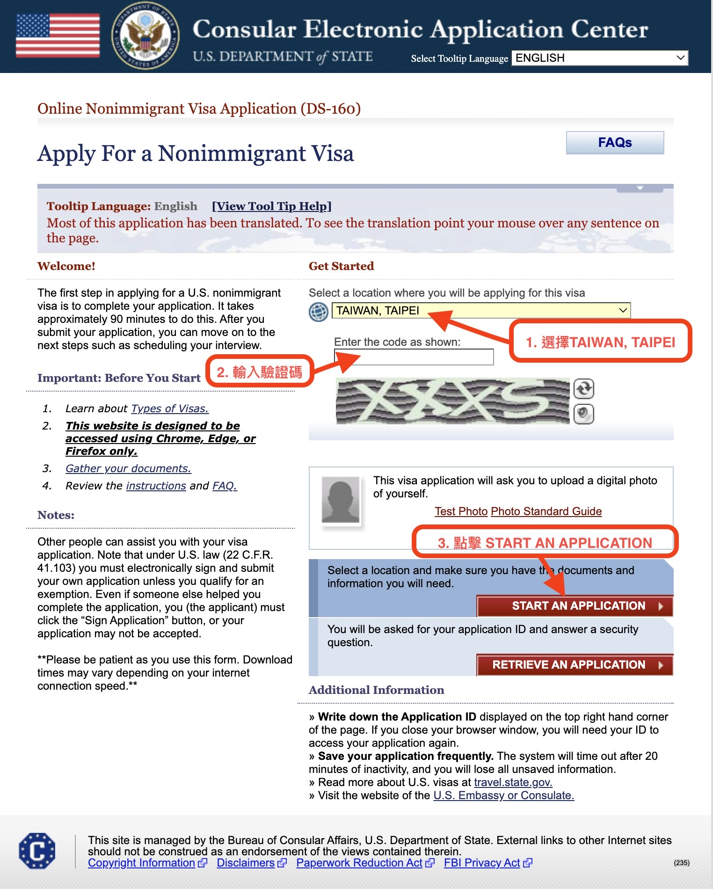
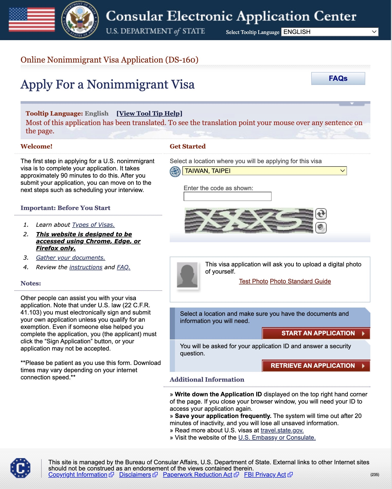
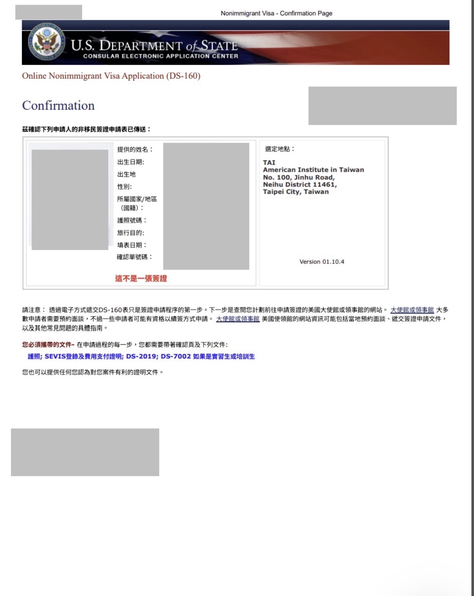
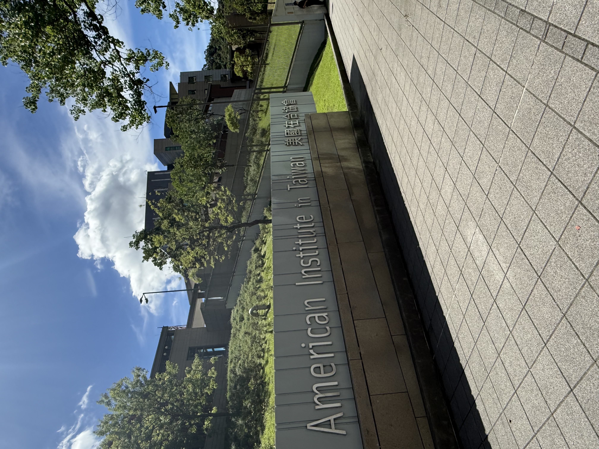
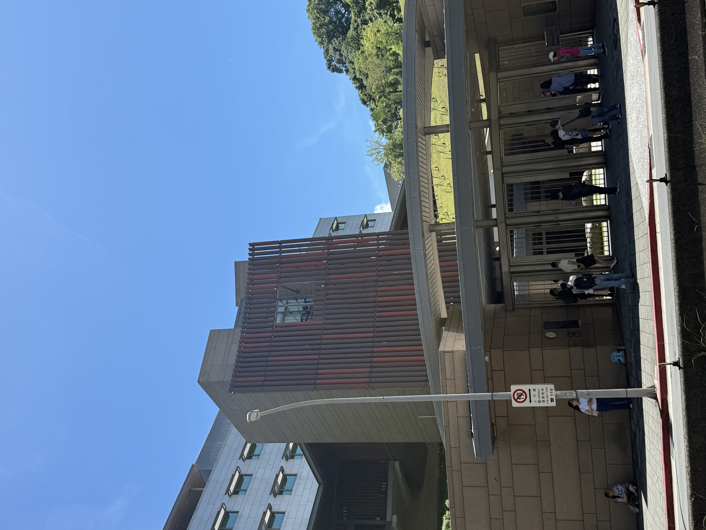
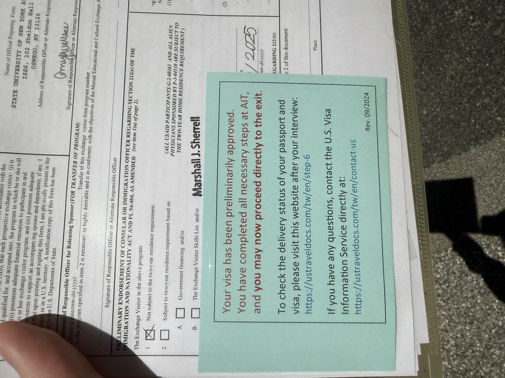

確定要去美國交換的那一刻，開心歸開心，但緊接著就是一堆陌生縮寫撲面而來——DS-2019、SEVIS、DS-160、AIT…… 當時我也是一頭霧水，花了不少時間東拼西湊才搞清楚整個流程。 這篇就是我希望當初能找到的那種文章：按順序走完，每一步說清楚要做什麼、在哪裡做、要注意什麼。
取得 DS-2019
拿到 DS-2019 的那一刻，感覺這件事才真的算是開始了。
DS-2019（Certificate of Eligibility for Exchange Visitor Status）是 J-1 簽證專用的資格證明文件， 由你的美國交換學校（Sponsor）負責核發。通常是在你完成學校那邊的入學手續後， 學校的 International Office 會以掛號郵件或電子郵件寄給你。
收到之後，最重要的是確認上面的 SEVIS ID（格式為 N 開頭的 10 位數）， 後續繳費和填表都會用到這組號碼。

繳交 SEVIS I-901 費用
這個費用我一開始完全不知道要繳，是後來查才發現的——差點忘掉。
SEVIS（Student and Exchange Visitor Information System）是美國政府追蹤交換生狀態的系統， 申請 J-1 前需要先在 fmjfee.com 繳交 I-901 費用（目前 J-1 為 USD $220）。 繳完之後會收到一封確認信，記得截圖或存 PDF，面談時要帶去。



→ fmjfee.com 前往繳費
填寫 DS-160 線上申請表
DS-160 是所有美國非移民簽證都要填的線上申請表，內容很多，建議留一個下午慢慢填。
DS-160 在 ceac.state.gov 填寫，填完送出後會產生一頁有條碼的確認頁（Application ID 開頭的那頁）， 一定要列印出來，面談時需要帶著去。
過程中需要上傳一張符合規格的照片（白底、正面、近期），建議提前準備好。 填到一半可以儲存 Application ID 之後繼續，但注意系統有 30 天失效限制。



→ ceac.state.gov 前往填寫 DS-160
預約 AIT 面談
預約 AIT 這一步比我想像的麻煩，介面不太直覺，還要先建立帳號。
在 ustraveldocs.com 建立帳號後，選擇簽證類型（Exchange Visitor / J）， 按照指示完成 profile 填寫，再選擇面談日期。 預約成功後會收到一封確認信，同樣需要列印帶去 AIT。


→ ustraveldocs.com 前往預約
AIT 面談當天
面談前一晚我把所有文件排了好幾次，緊張程度完全不亞於考試前。
提前 10–15 分鐘到 AIT，依照排隊指示進入。 面談官英文提問，通常問的是：你去哪所學校、讀什麼、交換多久、資金來源，以及結束後是否會回台灣。 回答簡潔、誠實就好，J-1 學生簽的核准率通常不低，只要文件齊全問題不大。



收到護照與簽證
快遞送來的那天，打開護照翻到那頁貼紙，整個人才真的放鬆了。
面談通過後，護照會交由 AIT 委託的快遞公司寄回你填寫的地址， 通常 3–5 個工作天內會到。 收到後確認 J-1 簽證上的 ENTER BEFORE 日期（簽證有效期） 以及 Annotation 欄（通常會寫你的 SEVIS ID）是否正確。

📋 面談完整文件清單
把這些文件在面談前一天全部整理好，用夾鏈袋或資料夾裝好帶去。
-
有效護照 效期須超過預計離美日期至少 6 個月
-
DS-2019 原件 由美國交換學校核發，需攜帶原始紙本
-
SEVIS I-901 繳費收據 fmjfee.com 繳費後的確認頁，列印或截圖皆可
-
DS-160 確認頁 需列印含條碼的那一頁，不能只用手機截圖
-
AIT 面談預約確認信 ustraveldocs.com 預約後收到的 Email，列印帶去
-
1 吋白底彩色照片 1 張 符合 AIT 規格（近期、正面、無眼鏡），有時當場不需要但備著比較保險
-
財力證明 銀行存摺近 3 個月對帳單、獎學金核准信，擇一或合併
-
在學證明或在籍學生證 台灣學校出具的英文版在學證明
-
交換錄取通知書 美國學校寄來的英文錄取信或 Acceptance Letter
-
成績單（英文版） 面談官不一定會看，但備著不吃虧
-
語言能力證明 TOEFL / IELTS 成績單或校內認可的英語能力文件
-
機票訂位紀錄 若已訂機票，可作為計劃返台的佐證